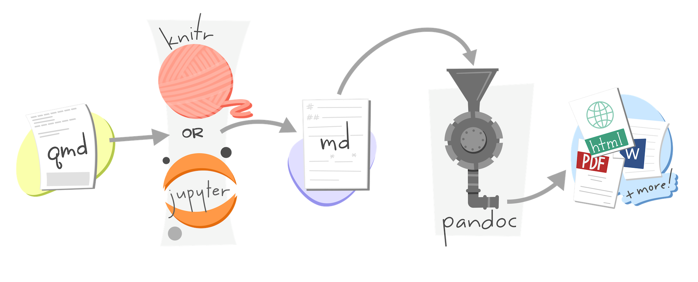
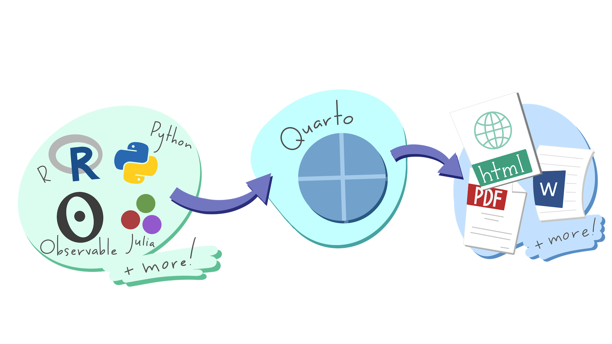

A deep dive into Quarto
Lecture 12
Dr. Benjamin Soltoff
Cornell University
INFO 3312/5312 - Spring 2023
3/7/23
Announcements
Announcements
TODO
Setup
Packages + figures
YAML options
Quarto
Quarto basics
---
title: "Gun deaths"
date: "`r lubridate::today()`"
format: html
---
```{r setup}
#| include: false
library(tidyverse)
library(rcis)
youth <- gun_deaths |>
filter(age <= 65)
```
# Gun deaths by age
We have data about `r nrow(gun_deaths)` individuals killed by guns. Only `r nrow(gun_deaths) - nrow(youth)` are older than 65. The distribution of the remainder is shown below:
```{r youth-dist}
#| echo: false
youth |>
ggplot(aes(age)) +
geom_freqpoly(binwidth = 1)
```
# Gun deaths by race
```{r race-dist}
youth |>
ggplot(aes(fct_infreq(race) |> fct_rev())) +
geom_bar() +
coord_flip() +
labs(x = "Victim race")
```Major components
- A YAML header surrounded by
---s - Chunks of code surounded by
``` - Text mixed with simple text formatting using the Markdown syntax
Quarto code chunks
Rendering process

Rendering process

🤔 AE: Edit the Quarto document
- Render
gun-deaths.qmdas an HTML document - Add text describing the frequency polygon
05:00
Code chunks
- Naming code chunks
- Code chunk options
eval: falseinclude: falseecho: falsemessage: falseorwarning: falseerror: truecache: true
Dependencies
Inline code
We have data about `r nrow(gun_deaths)` individuals killed by guns. Only `r nrow(gun_deaths) - nrow(youth)` are older than 65. The distribution of the remainder is shown below:We have data about 100798 individuals killed by guns. Only 15687 are older than 65.
🤔 Modify chunk options
- Set
echo: falseas a global option - Enable caching for each chunk and render the document. Look at the file structure for the cache. Now render the document again. Does it run faster?
07:00
YAML header
YAML header
- Yet Another Markup Language
- Standardized format for storing hierarchical data in a human-readable syntax
- Defines how
quartorenders your.qmdfile
HTML document
Table of contents
Appearance and style
Global options
---
title: "My Document"
format: html
execute:
echo: true
message: false
knitr:
opts_chunk:
fig-width: 7
---- Default document-level options
- Some options are set with
execute
🤔 Modify YAML options
- Add a table of contents
- Use the
"minty"theme - Modify the figures so they are 8 inches wide by 6 inches tall
- Set code chunk options globally
07:00
PDF document
render()
R scripts
# gun-deaths.R
# 2017-02-01
# Examine the distribution of age of victims in gun_deaths
# load packages
library(tidyverse)
library(rcis)
# filter data for under 65
youth <- gun_deaths %>%
filter(age <= 65)
# number of individuals under 65 killed
nrow(gun_deaths) - nrow(youth)
# graph the distribution of youth
youth %>%
ggplot(aes(age)) +
geom_freqpoly(binwidth = 1)
# graph the distribution of youth, by race
youth %>%
ggplot(aes(fct_infreq(race) %>% fct_rev())) +
geom_bar() +
coord_flip() +
labs(x = "Victim race")When to use a script
- For troubleshooting
- Initial stages of project
- Building a reproducible pipeline
- It depends